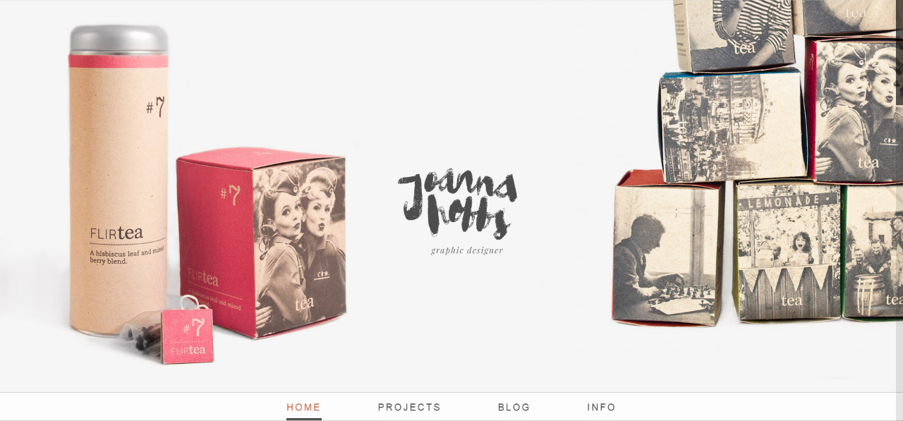
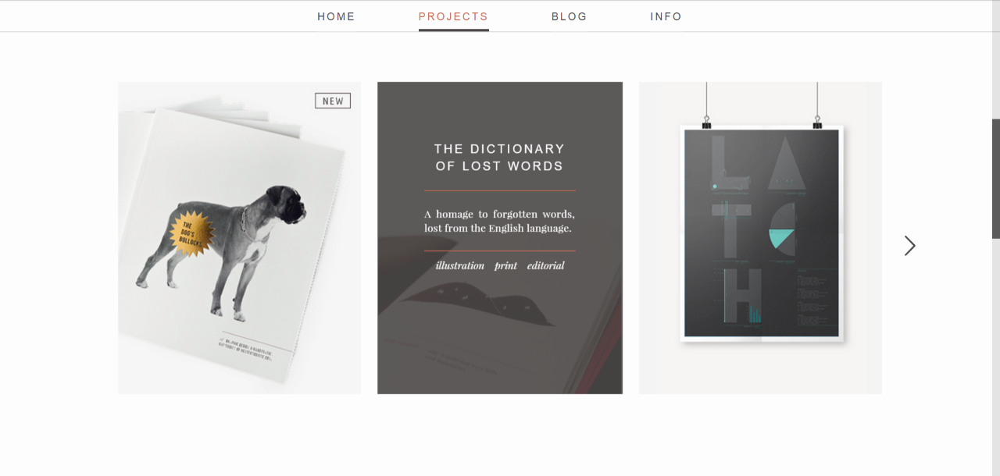

Design
This website design was a collaborative effort; combining Joanna's admirable design skills with my knowledge of web layout techniques and technology.
Homepage
The site is based around full-screen slides. It is gesture aware, enabling visitors to swipe or drag to the next slide. (navigation using scroll wheel, keyboard arrows and scroll bar are also supported)
Project Portfolio
A horizontal slider shows off the projects; a brief description is also displayed on hover.
